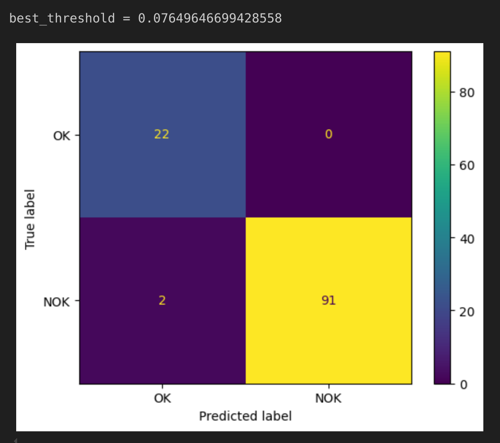
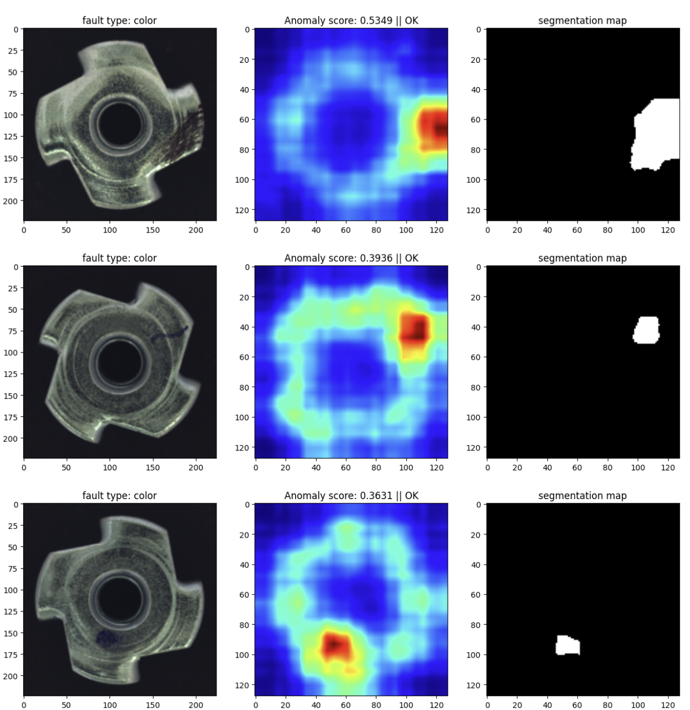
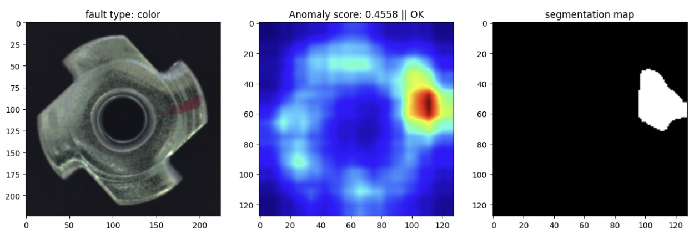

Skills: Pytorch , Matplotlib, NumPy
Deep Industrial Anomaly Detection
Aim of the Project
During my internship at XYZ Chemical Company in Surat, India, I worked on a project focused on finding defects in industrial parts like screws and metal nuts using deep learning techniques. The company needed a reliable system to spot these defects to ensure the quality of their products.
Implementation Overview
Project Objective:
My task was to create a model that could detect these defects. I trained the model using both the company's data and the MVTec dataset.
Method:
Data Preparation: I collected and prepared images of screws and metal nuts for training. Below is the sample of raw dataset used during training.
Background:
Anomaly detection is a critical task in various industries to ensure the integrity and quality of products. It involves identifying patterns in data that do not conform to expected behavior. In this project, deep learning models, specifically autoencoders and ResNet, were employed for anomaly detection. Autoencoders are unsupervised learning models that aim to learn a compressed representation of input data and can highlight deviations when reconstructing faulty data. ResNet, a powerful convolutional neural network, is known for its effectiveness in feature extraction from images.
Model Structure:
this project aimed to leverage the strengths of both models by integrating ResNet's feature extraction capabilities with an autoencoder for anomaly detection. The goal was to create a robust system that can accurately detect defects in industrial components by combining feature-rich data representation and efficient reconstruction-based anomaly detection.
The ResNet model was used to extract high-level features from input images. The extracted features serve as the input to the autoencoder, providing a rich representation for subsequent anomaly detection.
1. Autoencoder Model:
The first approach involved using an autoencoder model. The autoencoder consisted of an encoder and a decoder. The encoder compressed the input image into a lower-dimensional representation, and the decoder reconstructed the image from this representation. By comparing the original and reconstructed images, anomalies were detected based on reconstruction errors. The model's performance was evaluated using the AUC-ROC score. Although the autoencoder achieved a score of 0.33, indicating room for improvement, it provided valuable insights for further optimization.
Below Model Architecture is taken from the original research paper "Towards Total Recall in Industrial Anomaly Detection" during my reserach review duration in the internship.
Python Code:
import torch.nn as nn
class FeatCAE(nn.Module):
def __init__(self, in_channels=1000, latent_dim=50, is_bn=True):
super(FeatCAE, self).__init__()
layers = []
layers += [nn.Conv2d(in_channels, (in_channels + 2 * latent_dim) // 2, kernel_size=1, stride=1, padding=0)]
if is_bn:
layers += [nn.BatchNorm2d(num_features=(in_channels + 2 * latent_dim) // 2)]
layers += [nn.ReLU()]
layers += [nn.Conv2d((in_channels + 2 * latent_dim) // 2, 2 * latent_dim, kernel_size=1, stride=1, padding=0)]
if is_bn:
layers += [nn.BatchNorm2d(num_features=2 * latent_dim)]
layers += [nn.ReLU()]
layers += [nn.Conv2d(2 * latent_dim, latent_dim, kernel_size=1, stride=1, padding=0)]
self.encoder = nn.Sequential(*layers)
layers = []
layers += [nn.Conv2d(latent_dim, 2 * latent_dim, kernel_size=1, stride=1, padding=0)]
if is_bn:
layers += [nn.BatchNorm2d(num_features=2 * latent_dim)]
layers += [nn.ReLU()]
layers += [nn.Conv2d(2 * latent_dim, (in_channels + 2 * latent_dim) // 2, kernel_size=1, stride=1, padding=0)]
if is_bn:
layers += [nn.BatchNorm2d(num_features=(in_channels + 2 * latent_dim) // 2)]
layers += [nn.ReLU()]
layers += [nn.Conv2d((in_channels + 2 * latent_dim) // 2, in_channels, kernel_size=1, stride=1, padding=0)]
self.decoder = nn.Sequential(*layers)
def forward(self, x):
x = self.encoder(x)
x = self.decoder(x)
return x
2. ResNet Model:
Recognizing the need for better performance, a ResNet-based model was implemented. ResNet's powerful feature extraction capabilities were leveraged to improve anomaly detection accuracy. This model was pre-trained on ImageNet, allowing for efficient feature extraction.
class resnet_feature_extractor(torch.nn.Module):
def __init__(self):
super(resnet_feature_extractor, self).__init__()
self.model = resnet50(weights=ResNet50_Weights.DEFAULT)
self.model.eval()
for param in self.model.parameters():
param.requires_grad = False
# Hook to extract feature maps
def hook(module, input, output):
self.features.append(output)
self.model.layer2[-1].register_forward_hook(hook)
self.model.layer3[-1].register_forward_hook(hook)
def forward(self, input):
self.features = []
with torch.no_grad():
_ = self.model(input)
self.avg = torch.nn.AvgPool2d(3, stride=1)
fmap_size = self.features[0].shape[-2]
self.resize = torch.nn.AdaptiveAvgPool2d(fmap_size)
resized_maps = [self.resize(self.avg(fmap)) for fmap in self.features]
patch = torch.cat(resized_maps, 1)
return patch
Feature Extraction:
Combined Model with Autoencoder:
The feature maps extracted by ResNet are fed into an autoencoder for anomaly detection. The autoencoder attempts to reconstruct the feature maps, and anomalies are identified based on reconstruction error.
Final Output
Graph Analysis:
The graph shows the distribution of reconstruction errors obtained from the trained model. The x-axis represents the reconstruction error values, and the y-axis represents the frequency of these errors.
Histogram Bars: Each bar in the histogram represents the count of data samples that have a specific range of reconstruction error values.
Red Vertical Line: The vertical red line indicates the threshold value calculated as the mean reconstruction error plus three times the standard deviation. This threshold is used to distinguish between normal and anomalous samples.

Training and Evaluation:
The combined model was trained using the same methodology as the standalone models. The loss function used was Mean Squared Error (MSE), and the model's performance was evaluated based on the reconstruction error and AUC-ROC scores.
The Combined model achieved an AUC-ROC score of 0.99, showcasing a significant improvement over the only using autoencoder model and resnet model seprately for entire application.
Autoencoder Based AOC Score:
Resnet Based AOC Score:
Autoencoder + Resnet Combined Based AOC Score:


